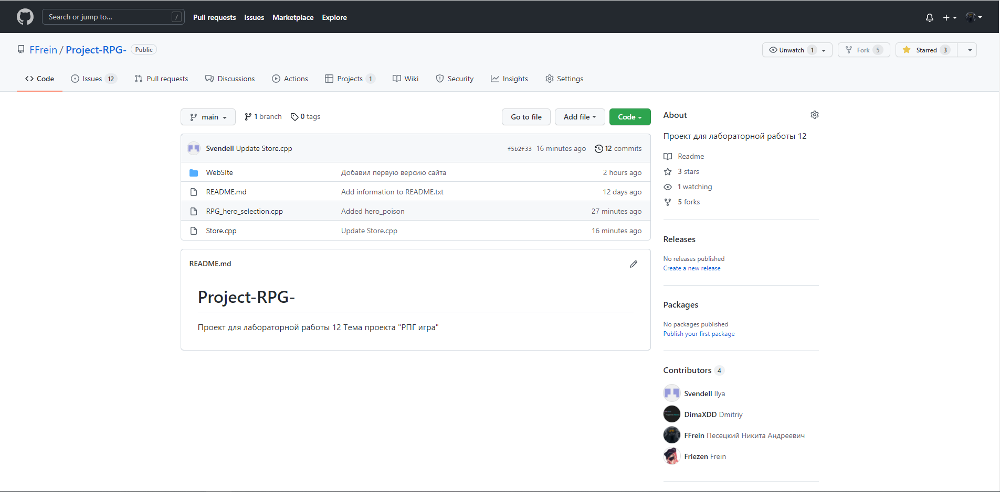

Project A
Консольная игра в жанре РПГ. Почувствую себя в роли консольного рыцаря, лучника или мага. Сражайся с монстрами, прокачивай персонажа что-бы победи главного босса игры.

Цели
Создание консольной игры на языке C++. Игра представляет из себя текстовую рпг с возможностью покупки предметов, битв с монстрами, прокачти персонажа. При создании данного проекта мы использовали навыки полученные во время обучения.
Описание
Консольная игра в жанре РПГ. Разработанна на языке программирования C++. В игре есть возможности: указать имя пользователя, выбор класса, покупка вещей в магазине, сражения с монстрами
Структура проекта
Проекта полностью написан на C++. При разработке использовались библиотеки: iostream conio.h windows.h stdio.h cstdlib time.h conio.h Windows.h. Основная структура проекта представляет собой один главный модуль вызывающий подключённые к нему 4 других модуля. Модули взаимосвязанны между собой. То есть существуют переменные передаваемые из одного модуля в другой.
Git Hub
О нас
Ученики Белорусского государственного технологического университета, специальность ПОИТ группа 5, подгруппа 1.
Команда проекта
Прогер
Александр Ломако
Прогер
Илья Песецкий
Прогер
Дима Трубач
Прогер
Никита Кутейко
ТимЛид
Никита Песецкий